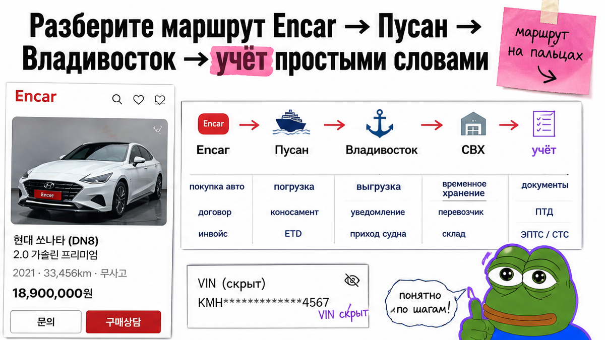
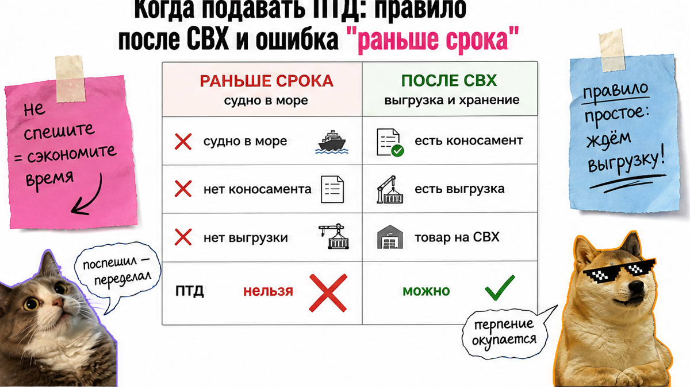
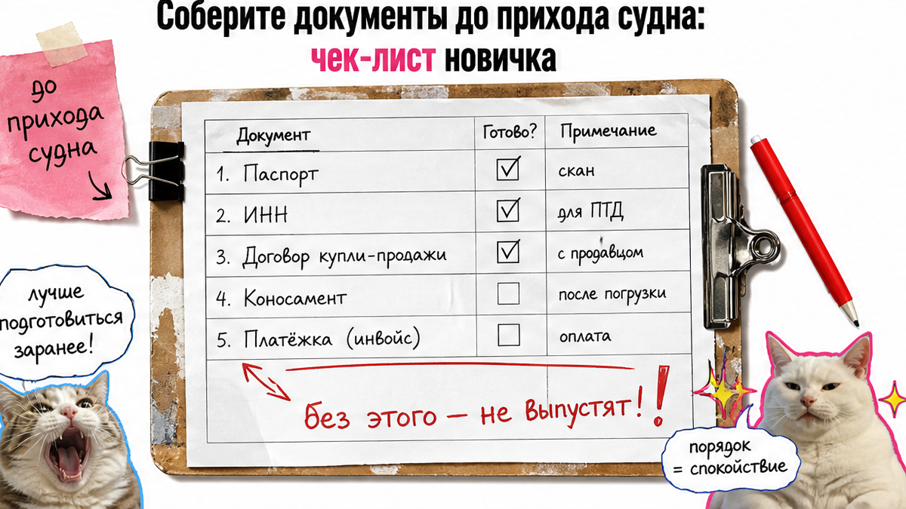

Игорь из Новосибирска уже перевёл депозит за Kia с Encar, а паром ещё в море – и звонит: "давайте подадим ПТД, чтобы быстрее". Типичная ловушка растаможки авто из Кореи через Владивосток: декларацию нельзя подать до выгрузки на склад. Ниже – маршрут на пальцах, момент подачи ПТД, чек-лист документов до прихода судна и куда идти за персональным расчётом, а не за чужой таблицей сумм.
ПТД (паспорт транспортной декларации – заявление в таможню на авто для личного пользования) подают только после выгрузки на СВХ и закрытия транзита. На ДВ в апреле 2026 средний выпуск ТСЛП был 2,9 суток, а полный цикл Корея → выдача чаще 45–55 дней. Готовьте пакет и деньги к часу после выгрузки – так не сжигаете льготные сутки склада.
Мы в Авто-Сейлс во Владивостоке ведём авто под заказ из Кореи и видим одну сцену: люди путают "выпуск после подачи" с "машину через две недели" и пытаются ускорить невозможный шаг. Честно говоря, инспектор тут ни при чём – чаще не готовы документы или деньги к моменту, когда подача уже разрешена.

На пальцах путь такой. Encar – корейская площадка объявлений. Дальше выкуп и экспорт в Корее, порт Пусан, море до Владивостока, выгрузка на СВХ, подача ПТД, платежи, затем СБКТС и ЭПТС, выдача и учёт.
Схема этапов:
Encar / проверка → выкуп и экспорт → Пусан → море → выгрузка Владивосток → СВХ → коносамент → ПТД → платежи → СБКТС + ЭПТС → выдача → учёт
Три слова без которых никуда. СВХ – склад временного хранения у порта после выгрузки (как "камера хранения" до таможни). Коносамент – морская накладная: груз пришёл, можно оформлять. ПТД – электронная декларация на авто для личного пользования.
После выпуска таможни ещё не конец: нужны СБКТС (свидетельство безопасности конструкции) и ЭПТС (электронный паспорт ТС). На практике это отдельные шаги, часто плюс 5–7 дней.
| Этап | Ориентир | Что контролировать |
|---|---|---|
| Экспорт / партия в Корее | до ~14 дней | Кто готовит экспортные бумаги |
| Море Пусан → Владивосток | часто 2–5 дней на Ro-Ro; контейнер дольше | Тип перевозки и ETA |
| Выпуск после ПТД | ~2–3 суток | Пакет и деньги на платежи |
| СБКТС + ЭПТС | +5–7 дней | Не путать с "чистой" таможней |
| Полный цикл до выдачи | 45–55 дней | Не верить "2–3 недели под ключ" без разбивки |
Сделайте: до депозита проговорите схему и кто подаёт ПТД. Не делайте: считать сроком только "море плюс три дня" – в реальном проекте ещё СБКТС/ЭПТС. Так вы сразу видите, где обычно застревает заказ.

Сюрприз, который экономит нервы: по данным ДВТУ средний выпуск ТСЛП в апреле 2026 – 2,9 суток. Владивостокская таможня в прессе говорит про фактические 2–3 дня после подачи. Ст. 119 ТК ЕАЭС ориентирует на часы с регистрации, с продлением до 10 рабочих дней. "Затык" чаще не в инспекторе, а в попытке подать ПТД, пока судно в пути.
Типичная ошибка Игоря: требовать декларацию до выгрузки. Пока машина не на СВХ и не закрыт транзит, подавать нечего – брокер ждёт коносамент. "Ускорить заранее" нельзя; можно подготовить пакет и деньги к этому часу.
Сделайте: готовьте документы и обеспечение к выгрузке. Не делайте: тратить дни на шаг "подадим, пока паром в море" – эта ошибка только жжёт нервы.

Льготный период СВХ во Владивостоке у складов обычно 5–10 суток, дальше платно. Например, у "Автоимпорт-ДВ": 7 суток в ставке выгрузки, затем 1000 → 2000 → 5000 ₽/сут для легкового до 3 т. Пакет собирайте до прихода судна.
На практике простой часто из мелочи: в инвойсе один VIN, в переводе – опечатка, таможня просит пояснение, льготные сутки тикают.
Сделайте: проверьте VIN за 3–5 дней до ETA. Не делайте: откладывать переводы "на потом, там быстро".
Одной цифры "для всех Kia" в честной статье быть не должно: платёж зависит от возраста, мотора, стоимости, курса и статуса физлица. Даже открытые калькуляторы считают по параметрам конкретной машины.
ДВТУ указывает: частые задержки – ожидание денег и дозапрос документов/стоимости. К подаче ПТД на лицевом счёте уже должно быть обеспечение.
Персональный расчёт под ваш лот – в каталоге avto-sales125.ru или в переписке Telegram @avtosales125. Форм на странице нет: цифры живут в расчёте под VIN, а не в чужой таблице из выдачи.
Сделайте: запросите расчёт до депозита и поймите, что платите в Корее, а что во Владивостоке. Не делайте: решать по скрину "у знакомого вышло столько" – другой год, мотор и дата ставок. Иначе легко переплатить "вслепую".
По ДВТУ среднее время на временном хранении в 2026 колебалось в пределах нескольких суток при живом потоке. Задача – не растянуть это до платного хвоста.
Сделайте: считайте часы после выгрузки дедлайном. Избегайте отпускать процесс, пока не пришёл счёт за хранение – простой на складе быстро становится дорогой проблемой.
Критерий результата: вы сможете объяснить маршрут своими словами; знаете, что ПТД только после СВХ и коносамента; собрали документы до прихода судна; держите горизонт 45–55 дней; идёте за персональным расчётом, а не угадываете сумму. Если чеклист закрыт – боль "с чего начать и когда подавать" снята.
Нужен заказ под ключ – откройте каталог Авто-Сейлс до депозита и уточните детали у менеджера. Офис: Владивосток, Днепровская 40а, стр. 4.
Сделайте: депозит только после пунктов 1–7. Не делайте: покупать "срок из рекламы" без разбивки этапов.
Материал проверен: редакция Авто-Сейлс (эксперты по авто под заказ из Японии, Кореи и Китая).
Достоверность: факты сверены с открытыми источниками на 2026-10-13 (ДВТУ / PrimaMedia по срокам выпуска ТСЛП, практика Владивостокской таможни, ст. 119 ТК ЕАЭС, разборы тайминга ПТД после СВХ, ориентиры цикла Корея→Владивосток) и практикой сопровождения заказов; актуальные расчёты – в каталоге.
После подачи ПТД ориентир выпуска – около 2–3 суток при готовых документах и деньгах. Полный путь от заказа до выдачи чаще 45–55 дней: экспорт, море, СВХ, платежи, СБКТС и ЭПТС. Не путайте эти два горизонта.
Корея часто быстрее на коротком море Пусан–Владивосток (у Ro-Ro нередко считанные дни), но остаются накопление партии, СВХ и пост-таможенные шаги. Сравнивайте полный цикл под ключ, а не один отрезок "море".
Да, но не звонками "раньше срока". Ускоряет готовый пакет, деньги на счёте до подачи и быстрые ответы на дозапрос. Попытка подать ПТД до выгрузки на СВХ время не экономит.
СВХ – склад у порта после выгрузки до выпуска. Льготные 5–10 суток (зависит от склада) – ваш буфер. Если документы и платежи не готовы, дальше платное хранение с растущим тарифом.
Нет. Запросите расчёт под VIN, год, мотор и дату оформления у команды сопровождения – до депозита. Чужие таблицы "для всех" не подставляйте в бюджет.
После выгрузки и оформления морской перевозки во Владивостоке. До прихода судна его обычно нет – поэтому ПТД "заранее" не собирается. Действуйте сразу после коносамента.
На практике почти всегда да: электронная подача, СВХ и стыковка с лабораторией под СБКТС/ЭПТС. До договора зафиксируйте, кто подаёт ПТД и что входит в услугу.